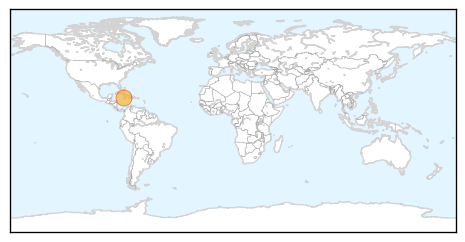
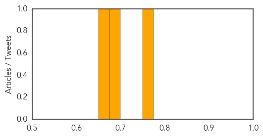
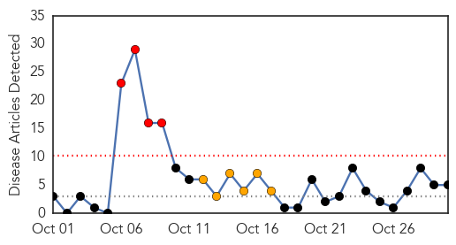
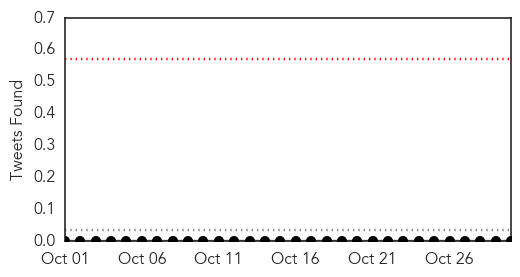
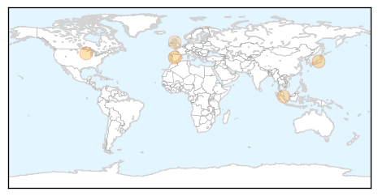
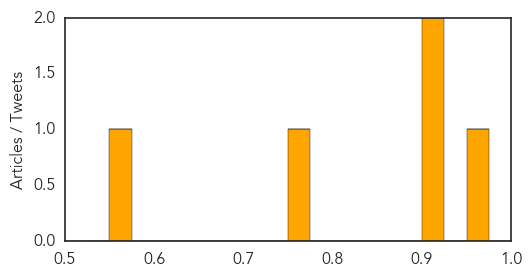

Chikungunya
30-Day Web Trend
2 alerts, 0 warnings

30-Day Twitter Trend
2 alerts, 0 warnings

Article Locations
Article Confidences
Top Articles:
Top Tweets:
-
No tweets found for Oct 30, 2015
Hepatitis
30-Day Web Trend
4 alerts, 6 warnings

30-Day Twitter Trend
0 alerts, 0 warnings

Article Locations
Article Confidences
Top Articles:
- 0.963
- Physician says vaccinations are needed for adults
- 0.920
- Health care workers at heightened risk of hepatitis C
- 0.911
- Health care workers at heightened risk of hepatitis C
- 0.771
- Singapore hospital says 653 patients screened over Hepatitis C outbreak
- 0.570
- Findings about WWII-Era Spread of Hepatitis C Could Inform Future Prevention Efforts
Top Tweets:
-
No tweets found for Oct 30, 2015